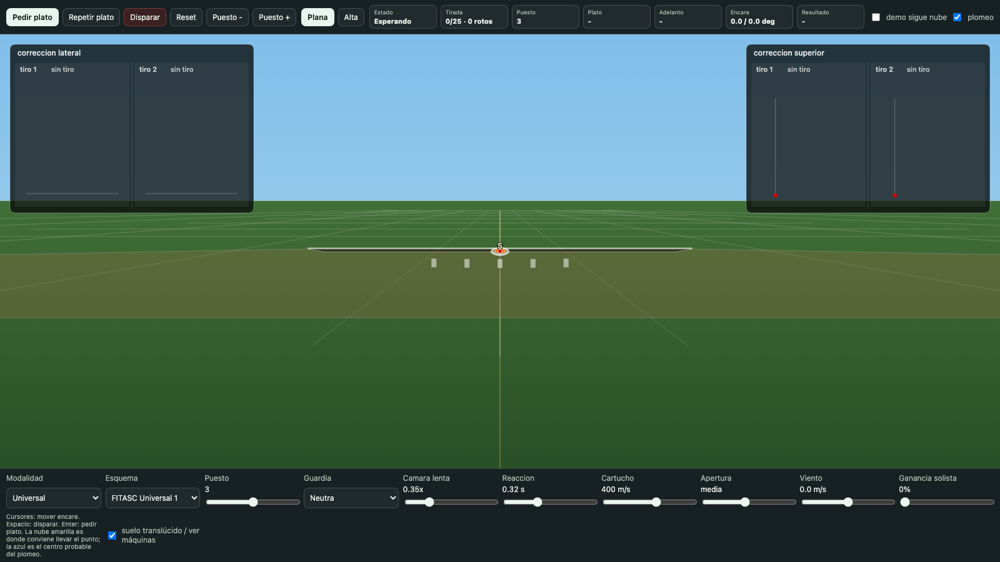
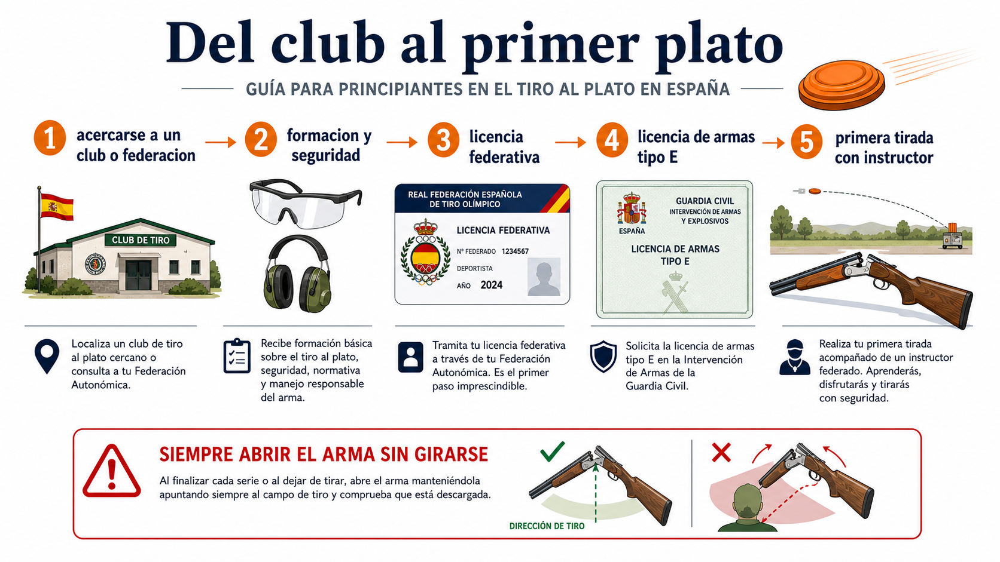
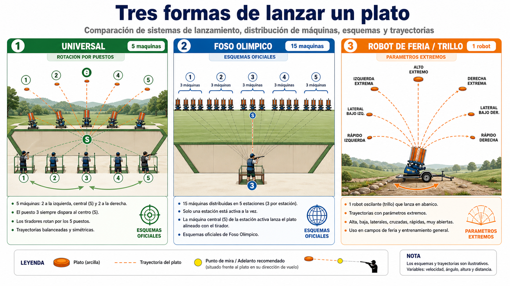
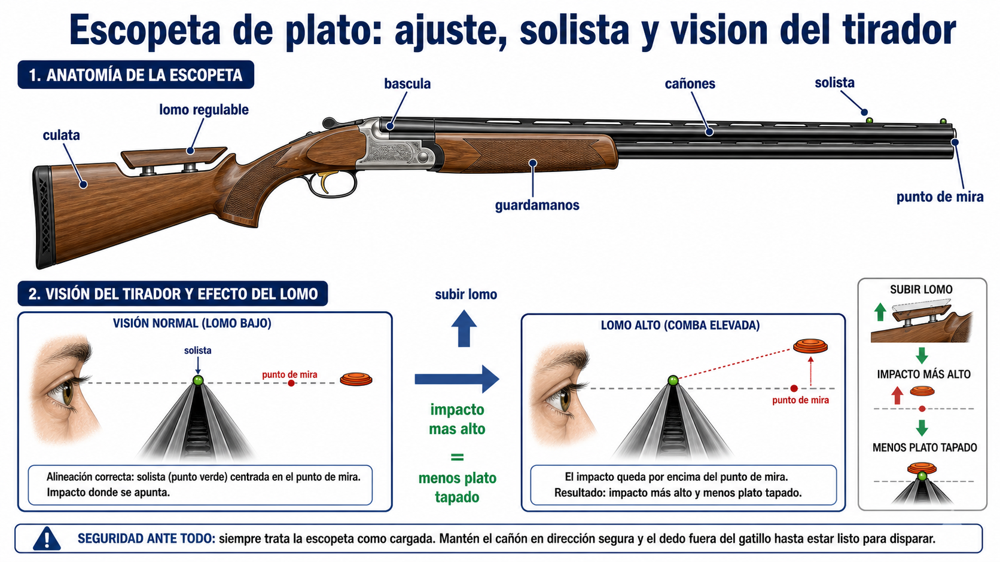
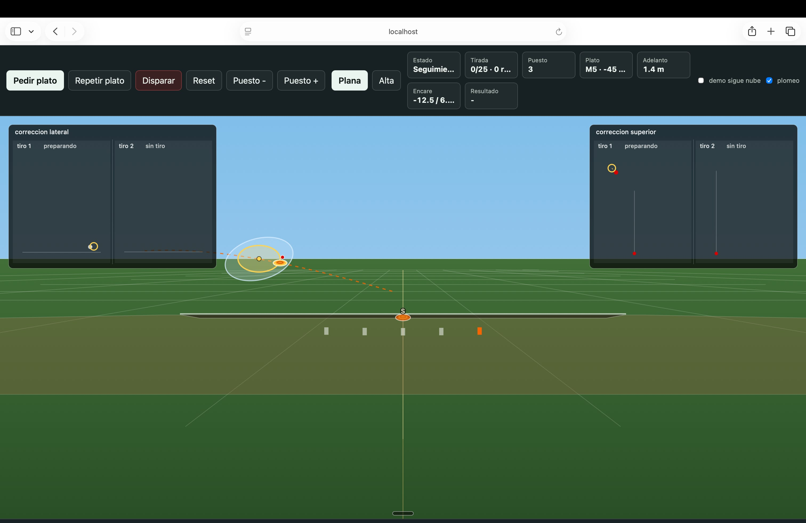
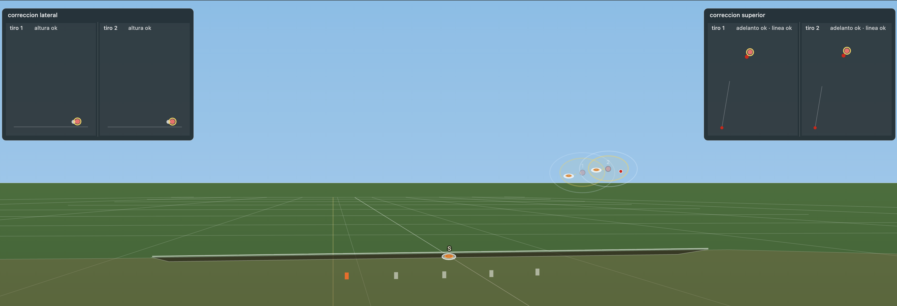
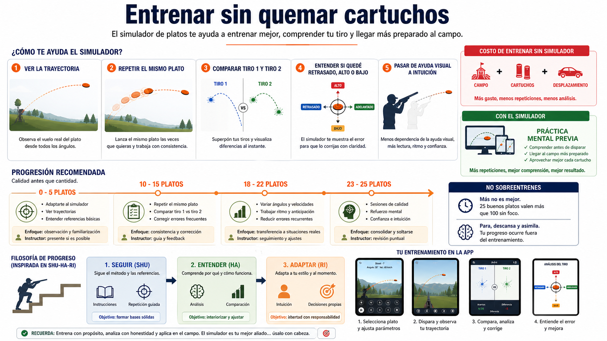

Al terminar el disparo
Abrir el arma sin girarse, manteniendo los cañones hacia la zona de tiro. Solo después se abandona el puesto.
Simulador + manual pedagogico
Un laboratorio visual para entender por que se falla: puestos, señuelo, salida del plato, adelanto, plomeo, energia residual, solista y correccion del primer y segundo tiro.

El tiro al plato no se entiende bien desde una explicación de dos frases. El principiante ve un disco naranja, apunta al disco, dispara y falla. La razón es sencilla de decir pero dificil de interiorizar: el plato se mueve mientras los perdigones viajan. Por eso el tiro efectivo no está exactamente donde el ojo ve el plato en el instante de disparar.
Este simulador nace para entrenar esa intuición. No pretende sustituir a un instructor, ni a un campo real, ni a la normativa de una federación. Pretende que el tirador vea, despacio y con ayudas, la relación entre velocidad, distancia, ángulo, plomeo y adelanto.
Lo razonable al empezar no es comprar material a ciegas. Lo normal es acercarse a un club de tiro, hablar con la federación autonómica o con un instructor y entender qué permisos hacen falta. En España intervienen la licencia federativa, la formación y la licencia de armas correspondiente, que debe verificarse con fuentes oficiales.
La pescadilla que confunde a muchos principiantes es esta: para practicar necesitas estar dentro de un circuito legal y federado, pero para obtener permisos y aprender con seguridad necesitas acercarte antes a quien ya conoce ese circuito. Por eso el club suele ser la puerta de entrada más sensata.

La seguridad no es una sección secundaria. En una cancha real hay otros tiradores, árbitros, máquinas, ruido, presión y armas cargadas. Un principiante puede fallar platos; lo que no puede hacer es girarse con el arma cerrada, manipular nervioso un encasquillamiento o olvidar hacia dónde apuntan los cañones.
Abrir el arma sin girarse, manteniendo los cañones hacia la zona de tiro. Solo después se abandona el puesto.
Quedarse quieto, cañones en dirección segura y pedir asistencia. La improvisación con un arma es mala compañera.
Gafas protectoras, protección auditiva, chaleco cómodo y cartuchos adecuados. El ruido de la cancha castiga más de lo que parece.
En muchos clubes hay varias pistas. Algunas están configuradas para Foso Universal y otras para Foso Olímpico. En tiradas populares pueden aparecer robots o máquinas oscilantes. Desde fuera todo parece “tirar platos”, pero para el tirador cambia la lectura de salida, la velocidad, el ángulo, la altura y la distancia.

| Modalidad | Qué representa en el simulador | Qué aprende el tirador |
|---|---|---|
| Universal | Cinco máquinas, señuelo central y rotación por puestos. | Base de lectura, adelantamiento y corrección. |
| Foso Olímpico | Quince máquinas agrupadas por puesto y esquemas reglados. | Más velocidad de lectura y adaptación a ángulos. |
| Robot / trillo | Una máquina oscilante con fuerza, altura y lateralidad regulables. | Comparar lo normativo con platos extremos de feria. |
El tirador no mira la escopeta como la miraría una cámara externa. Encara al hombro, adelanta la cara y alinea el ojo con la solista. Si la escopeta queda plana, puede ver casi solo una línea y el punto de mira; si sube el lomo o ajusta la culata, el punto efectivo de impacto cambia.
Esto importa porque una escopeta de caza no regulada puede obligar a tapar más plato. En cambio, una configuración de trap con lomo regulable permite que el disparo vaya algo por encima del punto de mira, facilitando ver el plato y corregir el segundo tiro.

El error normal es disparar donde está el plato, como en una pantalla de videojuego. En la cancha real, el plato se mueve, el cartucho tarda en llegar, la nube se abre y la escopeta puede tapar parte de la visión. Por eso el fallo típico es quedarse retrasado y bajo.
Además está el cuerpo: el hombro no está acostumbrado, la cara puede levantarse, el encare cambia de un tiro al siguiente y aparece la tentación de disparar demasiado. Un tirador nuevo aprende mejor con pocas series conscientes, corrección clara y repetición de platos concretos.
El plato ya se fue cuando llega el plomeo.
El plato sube y la nube pasa por debajo.
La escopeta tapa el plato si la geometría ojo-solista no ayuda.
El simulador calcula el plato como un objetivo móvil y el disparo como una nube de perdigones. Cada perdigón tiene dirección, pequeña variación, retardo, pérdida de velocidad y energía. No basta con tocar geométricamente: si llega demasiado lejos o demasiado flojo, puede no romper.

En tiradas populares puede haber una sola máquina o robot, a veces montado en condiciones menos estables y ajustado “a ojo”. Si se aprieta el muelle, se aumenta la inclinación o se abre el barrido lateral, aparecen platos que no se parecen a una cancha regulada: muy altos, muy bajos, muy laterales o muy rápidos.
Eso explica por qué alguien entrenado en un campo ortodoxo puede sufrir en una feria, y por qué tiradores acostumbrados a esos robots resuelven trayectorias raras. La modalidad Robot del simulador existe para estudiar esa diferencia sin llamar normativo a lo que no lo es.
La aplicación permite pedir plato con botón derecho, disparar con botón izquierdo y mover el punto rojo con el ratón. Puede mostrar u ocultar ayuda de adelanto, trayectoria, plomeo y corrección. La repetición de plato sirve para entrenar una misma salida hasta que el cerebro aprende la relación entre velocidad, distancia y adelanto.



La documentación combina fuentes oficiales, federativas, comerciales y divulgativas. Las fuentes oficiales prevalecen si hay discrepancias. La simulación se ha construido para aprender y comparar, no para homologar una cancha ni certificar munición.
El proyecto se publica bajo licencia MIT. Al ser una página HTML, puede descargarse, instalarse localmente, copiarse, modificarse y redistribuirse. Pero toda copia o derivado debe conservar la referencia al autor original, Roberto Canales Mora, y el enlace a www.robertocanales.com.
La atribución forma parte del aviso de copyright y de permiso que acompaña al software.